Roma
Um dia, nossos amigos David e Tathiana perguntararam ao padre Beto: "O que devemos ver em Roma?". A resposta não podia ser mais direta e verdadeira: "Tudo!" Por isso essa é a página mais longa do nosso guia e com conteúdo sobre os principais pontos da cidade.
Roma é uma das cidades mais fascinantes do mundo. Cada rua, praça e monumento carrega séculos de história, arte e espiritualidade. Caminhar pela capital italiana é como atravessar um museu a céu aberto, onde o passado e o presente convivem em perfeita harmonia.
Além dos pontos turísticos famosos, Roma é um dos melhores lugares do mundo para simplesmente se perder pelas ruas e descobrir cantinhos inesperados, igrejas escondidas, praças tranquilas e vistas surpreendentes. A cidade recompensa quem explora sem pressa.
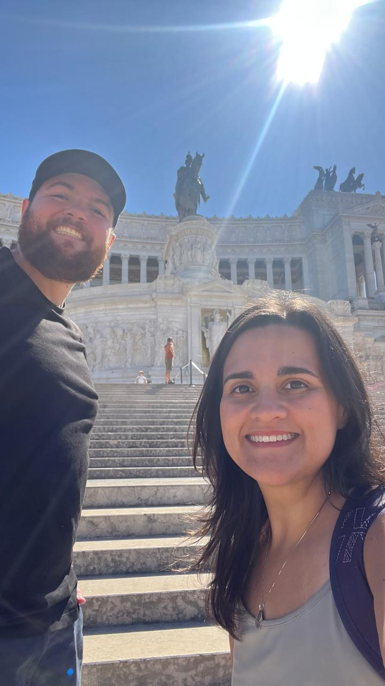
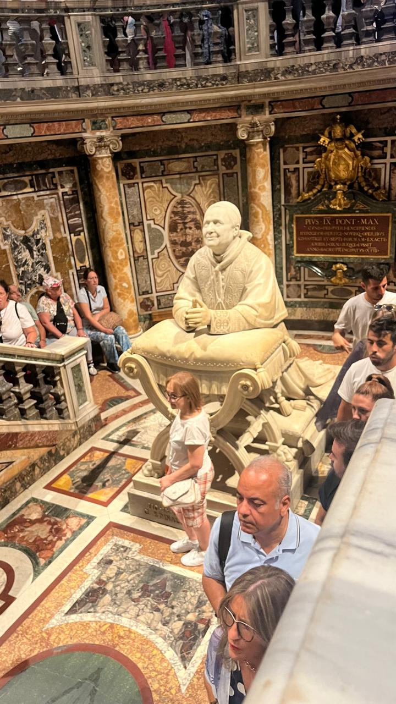

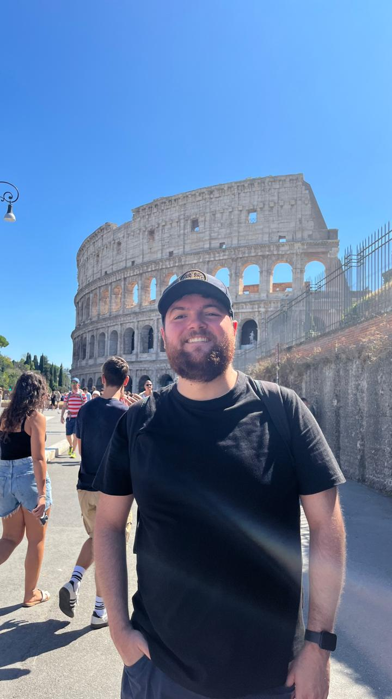
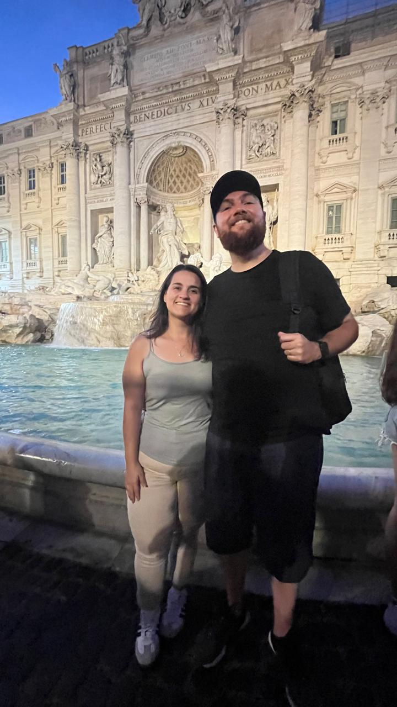
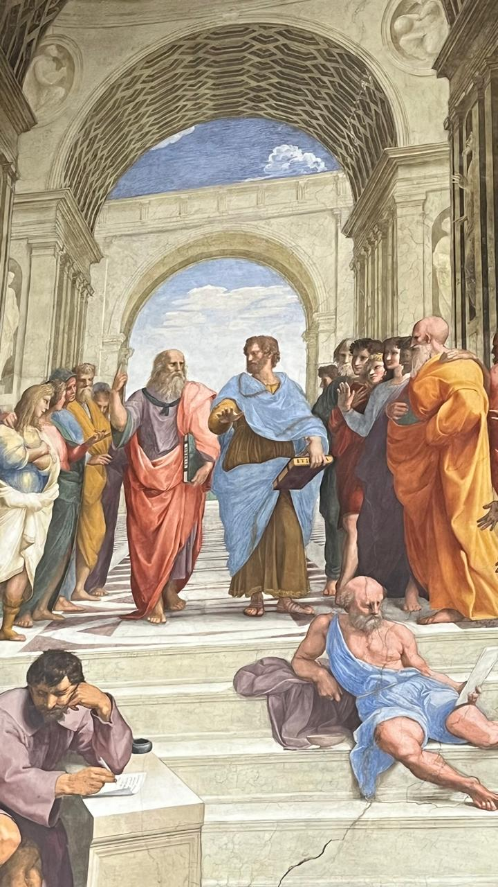
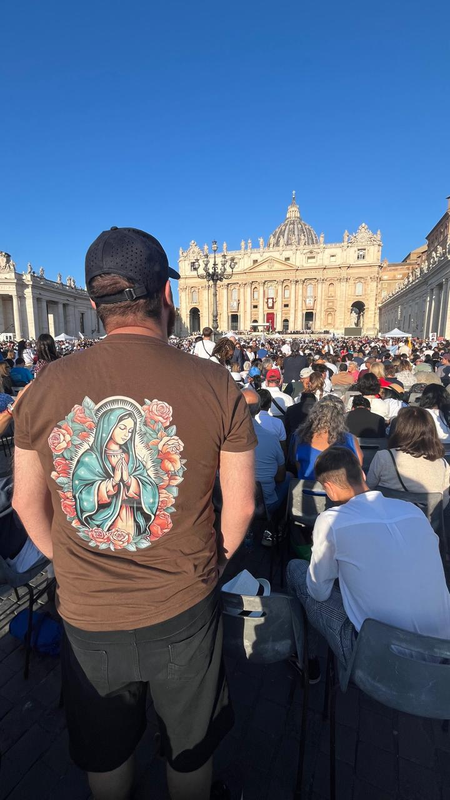
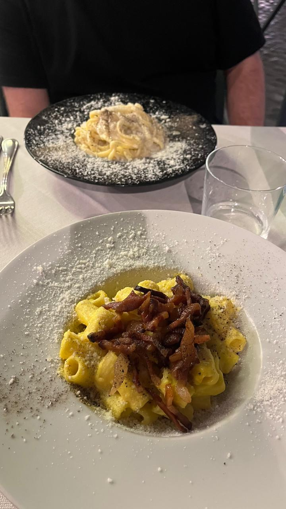
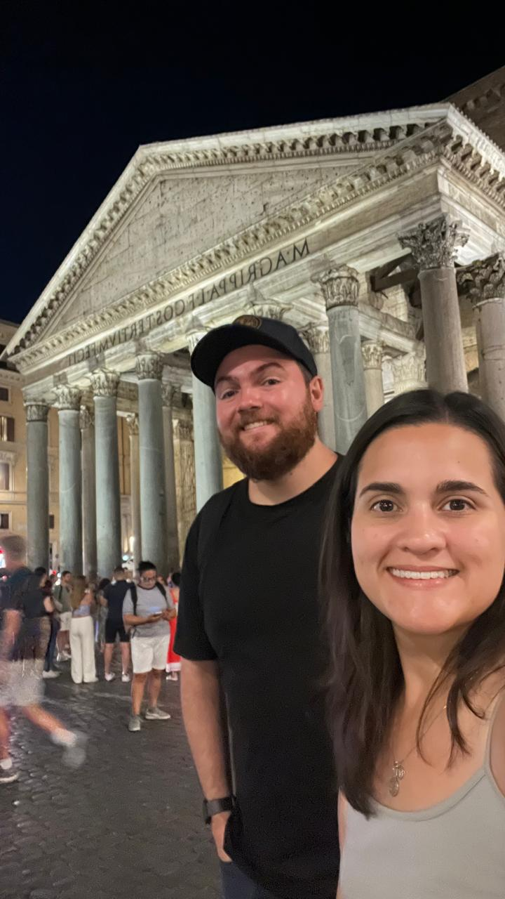
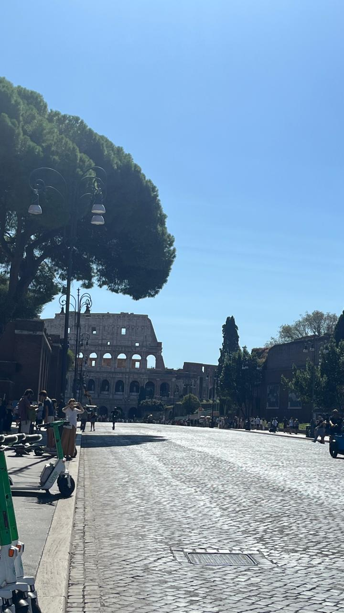
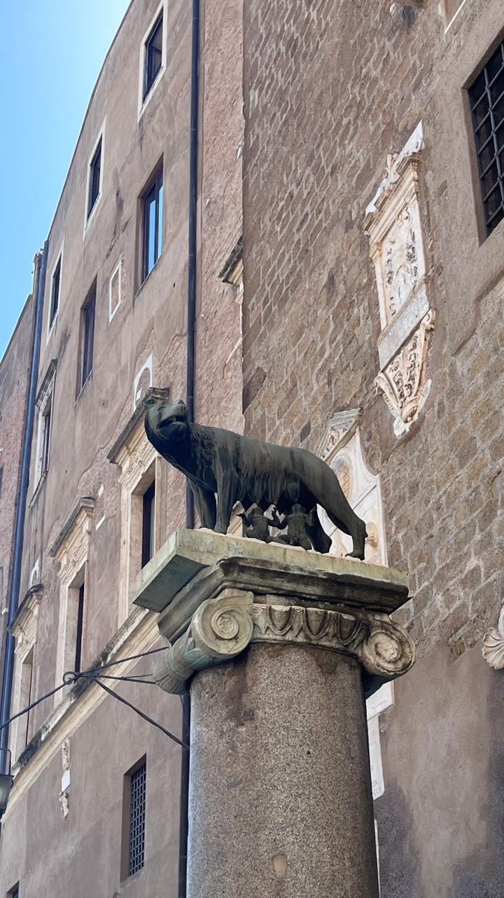
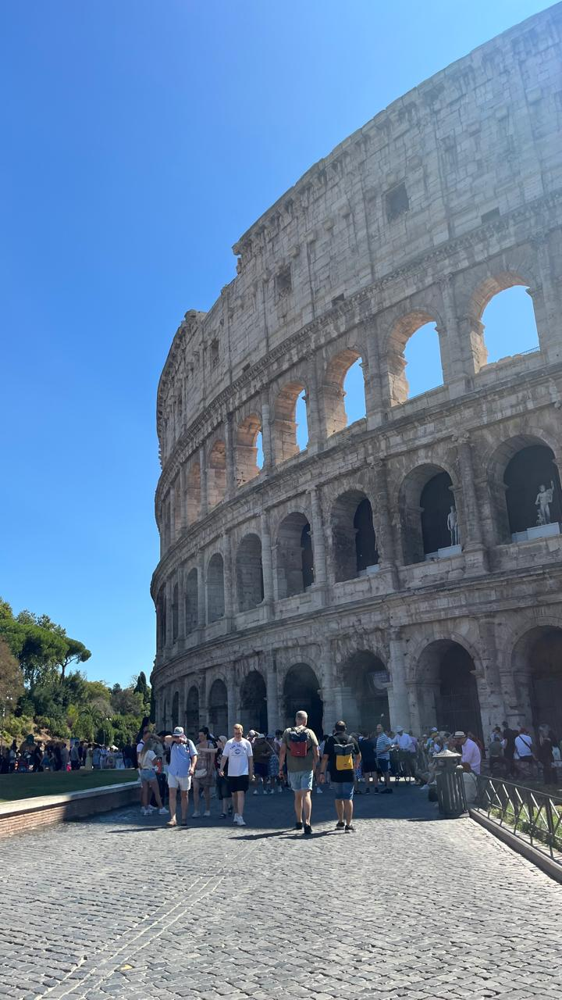
Milão → Roma
Saindo da Estação Central de Milão, pegue um trem de alta velocidade (Frecciarossa ou Italo) até Roma Termini. A viagem dura cerca de 3 horas e custa entre 30 e 60 euros dependendo da antecedência.
Roma possui excelente transporte público, mas muitos pontos turísticos ficam próximos uns dos outros. Caminhar é a melhor forma de aproveitar a cidade.
Pontos Turísticos Imperdíveis
Coliseu
O Coliseu é o símbolo máximo de Roma. Construído em 80 d.C., foi palco de batalhas de gladiadores, espetáculos públicos e eventos que reuniam milhares de pessoas. Caminhar por suas arquibancadas é sentir a força da história viva.
A entrada custa cerca de 16 euros (combo Coliseu + Fórum Romano + Palatino). Recomenda-se comprar com antecedência para evitar filas. A visita guiada ao subsolo é mais cara, mas extremamente interessante.
Fórum Romano e Palatino
O Fórum Romano era o centro político, religioso e comercial da Roma Antiga. Ruínas de templos, arcos e praças revelam como funcionava a vida na época dos imperadores. É um dos lugares mais impressionantes da cidade.
O Monte Palatino, ao lado, é considerado o berço de Roma. Lá ficavam as residências imperiais, com vista privilegiada para o Fórum. O ingresso é o mesmo do Coliseu.
Fontana di Trevi
A Fontana di Trevi é a fonte mais famosa do mundo. Construída no século XVIII, impressiona pela grandiosidade e pelos detalhes escultóricos. Jogar uma moeda garante o retorno a Roma — tradição seguida por milhões de visitantes.
A fonte fica sempre cheia, mas visitar à noite é mágico. A iluminação realça cada detalhe da obra.
Panteão
O Panteão é um dos edifícios antigos mais bem preservados do mundo. Construído em 125 d.C., possui uma cúpula perfeita com uma abertura central (óculo) que ilumina o interior de forma única. É um dos lugares mais impressionantes de Roma.
A entrada custa cerca de 5 euros. Vale muito a pena — é uma das experiências mais marcantes da cidade.
Piazza Navona
Uma das praças mais bonitas de Roma, com fontes barrocas e arquitetura elegante. A Fonte dos Quatro Rios, de Bernini, é o destaque. A região é cheia de cafés e restaurantes.
Ótimo lugar para descansar entre uma caminhada e outra.
Castelo de Santo Ângelo (Castel Sant’Angelo)
Originalmente construído como mausoléu do imperador Adriano, o Castelo de Santo Ângelo se transformou ao longo dos séculos em fortaleza, prisão e residência papal. Sua arquitetura maciça e sua história multifacetada fazem dele um dos pontos mais interessantes de Roma.
Do topo, a vista para o Rio Tibre e para a Basílica de São Pedro é espetacular. A entrada custa cerca de 14 euros. Vale muito a pena incluir no roteiro.
Museus do Vaticano
Os Museus do Vaticano abrigam uma das maiores coleções de arte do mundo, incluindo obras de Rafael, Caravaggio e milhares de peças da antiguidade. O percurso termina na famosa Capela Sistina, com o teto pintado por Michelangelo.
A entrada custa cerca de 20 a 25 euros. É altamente recomendado comprar ingresso antecipado para evitar filas gigantescas.
Monumento a Vittorio Emanuele II (Altar da Pátria)
O Monumento a Vittorio Emanuele II, também chamado de Altar da Pátria, é uma construção monumental em mármore branco dedicada ao primeiro rei da Itália unificada. Sua arquitetura imponente domina a Piazza Venezia.
É possível subir ao terraço superior por cerca de 12 euros, de onde se tem uma das melhores vistas panorâmicas de Roma.
As 4 Basílicas Papais de Roma
Basílica de São Pedro (Vaticano)
A maior igreja do mundo e o coração da fé católica. A cúpula projetada por Michelangelo é uma obra-prima absoluta. A entrada é gratuita, mas subir à cúpula custa cerca de 8 a 10 euros.
A Praça de São Pedro é um espetáculo à parte, especialmente ao amanhecer.
Basílica de São João de Latrão
É a catedral oficial do Papa e a mais antiga das basílicas papais. Seu interior é riquíssimo, com colunas monumentais e mosaicos impressionantes.
A entrada é gratuita. Ao lado fica a “Escada Santa”, que segundo a tradição foi trazida de Jerusalém.
Basílica de Santa Maria Maior
Uma das igrejas mais bonitas de Roma, com mosaicos do século V e uma nave majestosa. É dedicada à Virgem Maria e possui relíquias importantes.
A entrada é gratuita e vale muito a pena incluir no roteiro.
Basílica de São Paulo Fora dos Muros
Construída sobre o túmulo de São Paulo, é uma das maiores igrejas de Roma. Seu claustro é um dos mais belos da cidade, com colunas decoradas e atmosfera tranquila.
A entrada é gratuita. É um pouco afastada, mas vale cada minuto.
A Igreja do “Espelho para Foto” — Sant’Ignazio di Loyola
Sant’Ignazio di Loyola
A Igreja de Sant’Ignazio di Loyola é famosa por seu teto pintado com ilusão de ótica. Muitos turistas fazem fila para tirar foto usando um espelho colocado no centro da nave, que reflete o teto sem precisar olhar para cima.
Dica dos Ussinhos: se você não faz questão da foto com o espelho, entre pela lateral e aproveite a igreja sem fila. O teto é maravilhoso visto a olho nu — e você economiza tempo.
Gastronomia em Roma
Primo piatto
Roma é famosa por suas massas clássicas: Carbonara, Cacio e Pepe e Amatriciana. Cada uma tem sua história e seu estilo, e todas são deliciosas.
Experimente em restaurantes tradicionais fora das áreas mais turísticas para sentir o sabor autêntico.
Secondo piatto
O Saltimbocca alla romana é um clássico: carne com presunto e sálvia, cozida no vinho branco. Simples e saboroso.
Outros pratos incluem cordeiro e preparações típicas da culinária romana.
Sobremesa
O Tiramisù é um clássico italiano, mas em Roma você encontra versões incríveis. E claro: gelato artesanal em cada esquina.
Experimente sabores tradicionais como pistache, nocciola e stracciatella.
Dica dos Ussinhos 🐻💡
Roma é enorme e cheia de atrações. Se for sua primeira vez, escolha os pontos principais e caminhe bastante. A cidade recompensa cada passo com uma surpresa nova.
E lembre-se: Roma não se vê em um dia. Mas cada dia em Roma vale por uma vida inteira de memórias.